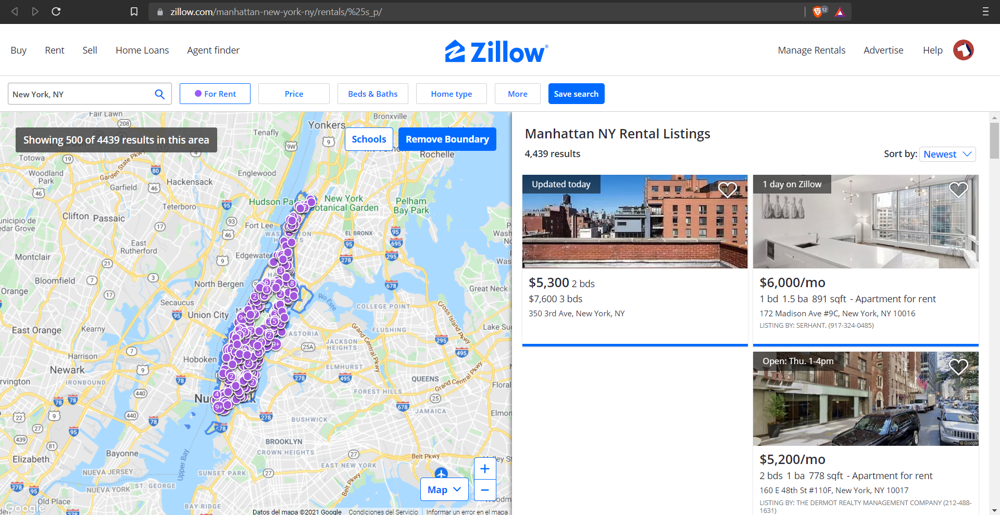
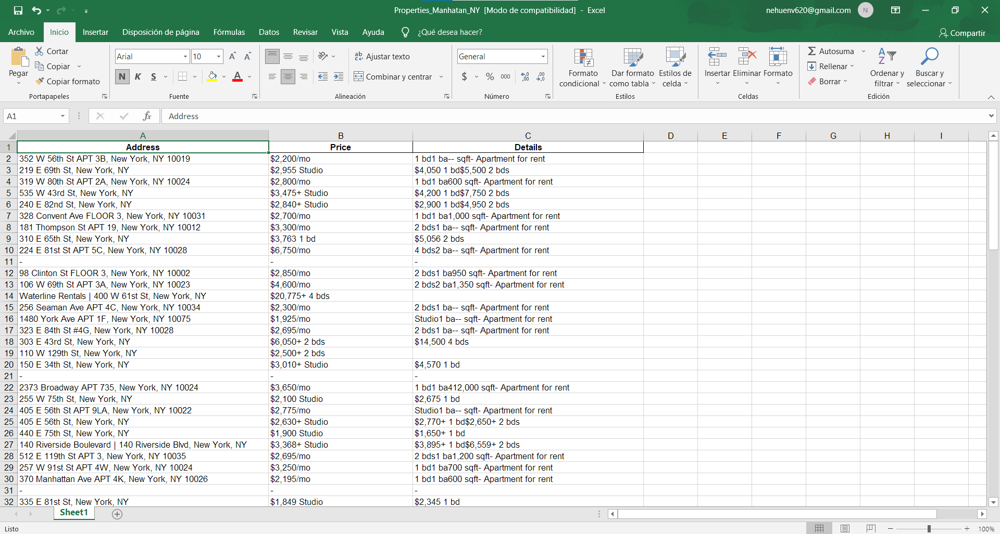

Zillow Scraping
This is used to get information about properties in any city from USA (Manhatan in this case), most importantly the price, adress and details of the property, although it's not limitted to it, it could get any information available there in zillow pages.
 This program is meant to be used for Real Estate Investors or wholesalers that are looking for good deals, therefore it's possible to change the script so that it get's only the properties with certain parameters (above a certain amount of sqft, below a ceraint price, and any other parameter).
Skills used in this project
- Python Programing Language
- Beautiful Soup 4 library
- Pandas library
- Excel Sheets